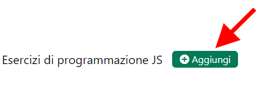
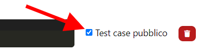

Aggiungere una domanda teorica
- Entra nell'editor dell'esame a cui vuoi aggiungere una domanda.
- Per aggiungere una nuova domanda, clicca il pulsante Aggiungi accanto a Domande e comparirà l'editor della nuova domanda.
- Seleziona la categoria della domanda.
- Puoi selezionare se la domanda è aperta oppure a scelta multipla usando il pulsante Cambia in domanda aperta. Se la domanda è a scelta multipla, specifica se essa accetta risposte multiple, spuntando la checkbox Accetta risposte multiple.
- Scrivi il testo della domanda.
- Se la domanda è a scelta multipla aggiungi le risposte, scrivi il testo di ciascuna domanda e seleziona quelle corrette.
Aggiungere un esercizio di programmazione
- Entra nell'editor dell'esame a cui vuoi aggiungere un esercizio di programmazione.
- Per aggiungere un nuovo esercizio, clicca il pulsante Aggiungi accanto a Esercizi di programmazione JS e comparirà l'editor del nuovo esercizio.

- Seleziona la categoria dell'esercizio.
-
Scrivi il testo dell'esercizio.
-
Inserisci il codice iniziale se l'esercizio lo prevede.
-
È necessario specificare quanti testcase il programma dello studente deve superare per poter essere consegnato. Per fare questo, inserisci tale numero accanto a Numero minimo di test case superati per poter consegnare.
- Per aggiungere un nuovo testcase, clicca il pulsante Aggiungi accanto a Test case e comparirà l'editor del nuovo testcase.

- Scrivi il codice relativo al testcase.
- Puoi specificare se il testcase è pubblico spuntando la checkbox Test case pubblico.
